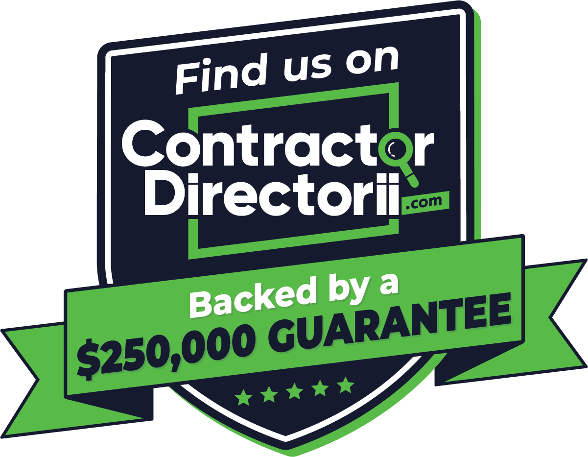

The Short Answer: What Is the Directorii Guarantee?
The Directorii guarantee is a third-party financial protection program for homeowners who hire a Directorii-vetted contractor. It covers up to $30,000 for deposit loss, fraud, and contractor abandonment, and up to $250,000 for workmanship failures, code violations, and material defects.
It is not a government program, not a manufacturer warranty, and not the contractor's own promise. It is an independent backstop tied to a contractor vetting platform.
Key Takeaways
- Basic tier: up to $30,000 for deposit theft, fraud, and abandonment
- Full tier: up to $250,000 for workmanship, code violations, and material defects
- Register within 30 days of signing the contract, or coverage is void
- Workmanship coverage lasts up to 5 years from the signed agreement
- Hail and storm damage are excluded and belong with your homeowner's insurance
- Verify the contractor's live listing on Directorii.com before you sign
Why Central Texas Homeowners Need This Protection
Every hail season in Central Texas, thousands of homeowners hire roofing contractors under pressure. The storm hits, the adjuster visits, and suddenly a stranger is standing in your driveway with a clipboard asking for a deposit. Too often, that's the last anyone sees of the money.
Storm-chasing contractors take deposits and leave town. Substandard work shows up as a leak six months later. Or the business closes before the final inspection passes. These aren't rare horror stories — they're documented patterns in one of the most fraud-prone trades in home improvement.
Verstera Roofing is among a select group of Central Texas contractors enrolled in the Directorii program, which is exactly why it's worth understanding in detail before any contract gets signed.
How Does Directorii Vet Roofing Contractors?
Getting listed on Directorii is not automatic. The platform reviews each contractor's:
- Licensing
- Background checks
- Financial standing
- Customer review history
Contractors must keep meeting those standards to stay listed — the guarantee isn't a lifetime badge awarded once and forgotten. That independent vetting is what gives the guarantee real weight, and it typically disqualifies storm-chasing operators before they start.
What Do the Two Coverage Tiers Actually Protect?
Basic Protection: Up to $30,000 for Deposit Loss and Fraud
The basic tier covers the financial relationship before meaningful work gets done. If a contractor takes your deposit and abandons the project, commits fraud, or goes out of business before completing the job, this tier reimburses qualifying losses up to $30,000.
Some contractor websites still advertise an older $20,000 figure. Directorii's current consumer-facing materials show $30,000, but always confirm the current limit directly on Directorii.com before signing.
Full Coverage: Up to $250,000 for Workmanship and Material Failures
The full tier extends coverage into the quality of the work itself, up to $250,000:
- Negligent workmanship
- Building code violations
- Failure to follow manufacturer installation specifications
- Material or product defects
If a roof fails because the contractor cut corners on underlayment, missed code-required flashing details, or installed a product incorrectly, this is the tier that provides a financial backstop.
Manufacturer defects: you must file with the manufacturer first. Directorii steps in only if the manufacturer wrongfully denies the claim or fails to respond within 60 days.
The $250,000 figure is a maximum limit, not an automatic payout. The claim must meet Directorii's terms, the project must be registered correctly, and the contractor must have been actively enrolled when the contract was signed.

Who Qualifies for the Directorii Guarantee?
Homeowner Requirements
- Create a Directorii account before or when the roofing contract is signed — not after work begins or a problem surfaces.
- Register the project on Directorii.com within 30 days of signing the contractor agreement.
- Either you or the contractor can submit the registration, but someone must do it before the deadline.
Miss the 30-day window and coverage is voided, regardless of what the contractor's listing says.
You can register through the Directorii website, or by emailing the signed agreement to guarantee@directorii.com with your name, address, account phone number, and the contractor's name.
Contractor and Project Requirements
The contractor must be actively listed on Directorii at the time the contract is signed. A contractor who was listed six months ago but whose status has since changed doesn't carry the guarantee for your project.
A logo on a contractor's website or truck confirms nothing. Verify the live listing on Directorii.com and complete project registration before any payment changes hands — that's how you lock in the $250,000 ceiling.
How Long Does Directorii Coverage Last?
Full workmanship coverage runs up to 5 years from the date of the signed contractor agreement.
It's a backstop, not a standalone warranty. It activates when a contractor's own workmanship warranty fails to perform and the failure qualifies under Directorii's terms. The contractor must first be given the chance to fix the defect. Contractor workmanship warranties range from 1 to 5 years, so your signed agreement controls what gets claimed first.
What Does the Directorii Guarantee Not Cover?
Weather-related damage is explicitly excluded from workmanship coverage. For Central Texas homeowners, this is the single most important exclusion to understand:
- Hail
- Ice dams and snow loads
- Winds exceeding 50 mph
- Normal wear and tear
- Maintenance-related deterioration
- Damage from extreme temperature changes
If a hailstorm damages a newly installed roof, that's an insurance claim, not a Directorii claim. The guarantee covers what the contractor did wrong, not what the weather did afterward. The full exclusion list depends on the guarantee version registered for your project, so read the actual guarantee document before signing.
How Do You File a Directorii Claim?
- Log in to your Directorii account and open "My Projects." Only registered projects can be claimed.
- Gather your documentation (see the checklist below).
- For product defects, contact the manufacturer first and wait for a denial or 60 days without a response.
- Submit the claim and respond promptly to every documentation or interview request.
Documentation Checklist
- Signed contractor agreement and proof of project registration
- Invoices, payment records, receipts, and cancelled checks
- Dated photos and videos of the defective or incomplete work
- Permits, inspection reports, code-violation notices, and manufacturer correspondence
- All communications with the contractor, including evidence of abandonment or refusal to correct the work
Claim Timeline and Resolution
- 2 business days: Directorii contacts you after filing
- Up to 30 days: coverage determination after a valid submission (can be extended)
- 15–30 days: average resolution time
Resolution may be financial reimbursement or Directorii arranging completion of the remaining work under the original contract terms. Cooperation is a condition of coverage — a claim that goes unanswered on your end can be denied.
Reach Directorii through the online portal under "My Projects," by email at guarantee@directorii.com, or by phone at 952-356-5833.
How Do You Verify a Contractor Carries the Directorii Guarantee?
- Search the contractor's legal business name on Directorii.com — don't rely on a logo or verbal confirmation.
- Confirm the listing is active and the business name and location match.
- Create your Directorii account before signing the contract.
- Agree with the contractor that the project will be registered before the first payment.
- Keep one organized file from day one: signed agreement, registration confirmation, payments, and all communications.
Contractors like Verstera Roofing are enrolled because they operate locally year-round, stand behind their work after storm season ends, and have passed independent vetting most transient operators can't clear. Choosing a Directorii-enrolled contractor isn't just a financial safety net — it's a signal that the contractor chose accountability over convenience.
The Bottom Line: Two Tiers, Three Steps, Zero Shortcuts
The Directorii guarantee covers up to $30,000 for fraud, deposit theft, and abandonment, and up to $250,000 for workmanship failures, code violations, and material defects. Coverage depends on three non-negotiable steps:
- You have a Directorii account when the contract is signed.
- The project is registered within 30 days.
- The contractor is actively enrolled at that exact moment.
Miss any one of them and the coverage doesn't apply. And remember: hail and high-wind damage go through your homeowner's insurance — Directorii covers what the contractor did or failed to do.
If you want a contractor who already carries this guarantee — backed by TAMKO Pro Gold Certification — we'll walk you through your protection options during a free 25-point roof inspection.
Frequently Asked Questions About the Directorii Guarantee
What is the Directorii guarantee for roofing contractors?
It is a third-party financial protection program offered through the Directorii contractor vetting platform. It covers homeowners against deposit loss, contractor fraud, and workmanship failures on projects completed by enrolled contractors. Coverage is split into two tiers: up to $30,000 for fraud and abandonment, and up to $250,000 for workmanship and material defects.
Does the Directorii guarantee cover hail damage?
No. Weather-related damage, including hail, ice dams, and winds above 50 mph, is explicitly excluded from workmanship coverage. Storm damage is an insurance claim. The Directorii guarantee only covers failures caused by the contractor's work or materials.
How long do I have to register a roofing project with Directorii after signing a contract?
You have 30 days from the date the contractor agreement is signed. Miss that window and coverage is voided entirely, regardless of the contractor's enrollment status.
Can I file a Directorii claim if I forgot to register the project?
No. An unregistered project is ineligible for any claim under either coverage tier. Registration must happen before a problem surfaces, ideally before the first payment is made.
How do I confirm my roofing contractor is currently enrolled in Directorii?
Search the contractor's legal business name directly on Directorii.com at the time you are ready to sign. A logo on a truck or website is not sufficient verification. The live listing on the platform is the only confirmation that counts.